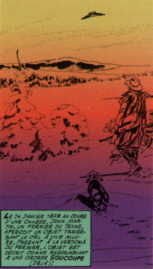

Dessin illustrant incorrectement l'observation de John Martin le 24 janvier comme ayant
une forme de soucoupe Gigi

Près de Denison (Texas), un fermier observe un objet qui le survole grande vitesse,
ressemblant un ballon "A Strange
Phenomenon", Denison Daily News, 1878-01-25 Fort, Charles Hoy: Vallée, Jacques: 1969Garreau, C.: "Quand
passent les soucoupes" in "Il y a 30 ans - L'invasion des soucoupes", Historia n° 368, 1977-07.
Observation d'un météore mystérieux "A
Meteoric Mystery", Burlington Hawk-eye, 1878-06-01.
Pendant l'éclipse solaire, Watson (Michigan) et Swift,
l'observatoire Warner, observent des disques rouges de 800 m de diamètre 32000 km de la Terre Fort.
Observation d'un corps passant devant Jupiter "Curious
Astronomical Phenomenon" The Indiana
Progress de Pennsylvania (Indiana), 1878-08-22.